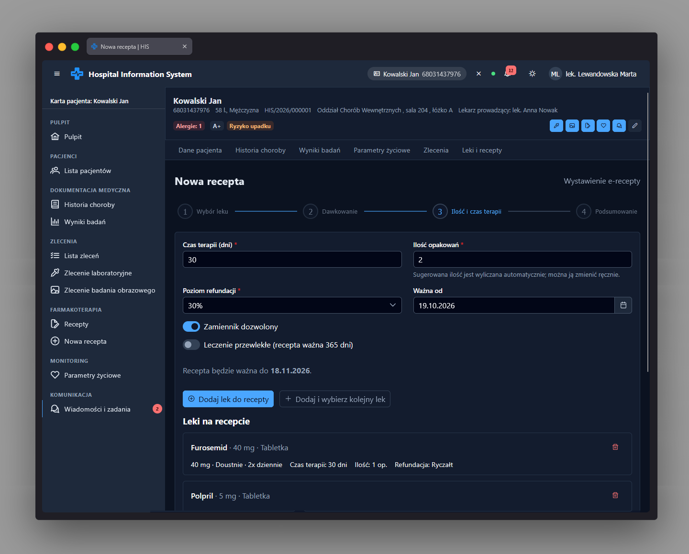

Kreator recepty app-prescription-wizard-page
Ścieżka
Podstrona karty pacjenta:
Karta pacjenta → Leki i recepty → Kreator recepty.
Dostępna pod adresem
/patients/:patientId/prescriptions/new jako dziecko
powłoki karty pacjenta /patients/:patientId.
Chroniona przez permissionGuard z uprawnieniem
PRESCRIPTION_CREATE. Dodatkowo zabezpieczona
canDeactivate: unsavedChangesGuard - opuszczenie
strony z niezapisanymi danymi (dodany lek, zmieniony formularz
dawkowania/ilości lub wybrany, ale jeszcze nie dodany lek) wymaga
potwierdzenia, o ile recepta nie została już wystawiona.
Istnieje też globalna trasa /prescriptions/new, która
jest jedynie przekierowaniem do tej, przypisanej do konkretnego
pacjenta, wersji kreatora.
Przeznaczenie
Czterokrokowy kreator (p-stepper, liniowy) do
wystawienia elektronicznej recepty (e-recepty) dla pacjenta: wybór
leku i sprawdzenie bezpieczeństwa, dawkowanie, ilość i czas
terapii, podsumowanie i wystawienie.
Dane wejściowe
-
Krok 1 - Wybór leku: wyszukanie i wybór leku
(
app-drug-picker). Po wybraniu leku automatycznie uruchamiane jest sprawdzenie bezpieczeństwa (interakcje, alergie) względem leków już dodanych do recepty. Jeśli wykryto ostrzeżenie o alergii o nasileniu "danger", przejście dalej jest zablokowane, dopóki użytkownik nie zaznaczy przełącznika "Świadomie przepisuję mimo ostrzeżenia" i nie wpisze uzasadnienia (pole wymagane). -
Krok 2 - Dawkowanie: formularz dawkowania
(
app-dosage-editor): dawka, jednostka dawki, droga podania, częstość, pory dnia, przełącznik "w razie potrzeby" (z maksymalną dawką dobową), uwagi/instrukcje. - Krok 3 - Ilość i czas terapii: liczba dni terapii (1-365, z podpowiedzią sugerowanej liczby opakowań po zmianie dawkowania lub czasu terapii, o ile użytkownik nie zmienił ilości ręcznie), liczba opakowań, sposób refundacji (ograniczony do opcji dostępnych dla wybranego leku), przełącznik "Zamiennik dozwolony", przełącznik "Leczenie przewlekłe" oraz data "Ważna od" dla całej recepty. Można dodać lek do listy i wybrać kolejny (maksymalnie 5 leków na recepcie) lub przejść do podsumowania.
- Krok 4 - Podsumowanie: przycisk "Wystaw e-receptę" uruchamiający zapis.
Akcje
-
Sprawdza bezpieczeństwo wybranego leku
(
DrugService.checkSafety) względem całej roboczej recepty (dodane leki + aktualnie wybrany) i pokazuje ostrzeżenia o interakcjach i alergiach; niepowodzenie sprawdzenia (np. brak uprawnień) jest sygnalizowane komunikatem, a nie wyciszane. - Wylicza sugerowaną liczbę opakowań na podstawie dawki, częstości i liczby dni terapii.
- Wylicza datę ważności recepty: 30 dni standardowo lub 365 dni dla leczenia przewlekłego (przewlekłe, gdy czas terapii przekracza 90 dni lub włączono przełącznik "Leczenie przewlekłe").
- Dodaje pozycję leku do roboczej listy recepty (do 5 pozycji); jeśli przy dodawaniu aktywne jest potwierdzone ostrzeżenie o alergii, dopisuje uzasadnienie do notatek całej recepty (w modelu pozycji recepty nie ma dedykowanego pola na uzasadnienie).
- Pozwala usunąć dodaną pozycję z listy przed wystawieniem.
-
Wystawia e-receptę
(
PrescriptionService.issuePrescription) z pacjentem, datami ważności, pozycjami leków i notatkami; po sukcesie pokazuje dialog e-recepty (app-e-prescription-dialog) i komunikat potwierdzający. -
Po zamknięciu dialogu lub anulowaniu kreatora przechodzi do
/patients/:patientId/prescriptions. -
Wyświetla informację o integracji FHIR
(
app-fhir-integration-note, zasóbMedicationRequest) w kroku podsumowania.
Zrzut ekranu
